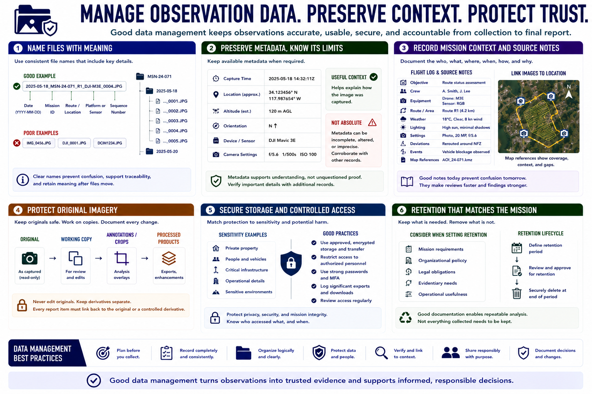

Data Handling and Documentation
Connecting to LMS... Progress: in progress

Narration
Observation data should remain connected to mission context. Use consistent file names that include a date, mission identifier, platform or sensor, and sequence. Avoid generic names that lose meaning after files move.
Preserve available metadata such as capture time, location, altitude estimate, orientation, device, and camera settings when the mission requires it. Metadata is useful context but can be incomplete, altered, or imprecise, so it should not be treated as absolute proof.
Flight logs and source notes should record objective, crew, equipment, route, weather, lighting, settings, deviations, and significant events. Map references link images to the area of interest and help reviewers understand coverage and gaps.
Protect original imagery from accidental editing. Store working copies, annotations, crops, and processed products separately, and document transformations. Every observation in a report should point to the relevant original or controlled derivative.
Storage and access should reflect sensitivity. Imagery may reveal private property, people, infrastructure, or operational details. Use approved encrypted storage and transfer where appropriate, restrict access, and log significant exports.
Retention should match mission, policy, legal, and evidentiary needs. Remove unnecessary data through approved processes when the retention period ends. Good documentation makes analysis repeatable without turning a limited mission into an indefinite surveillance archive.